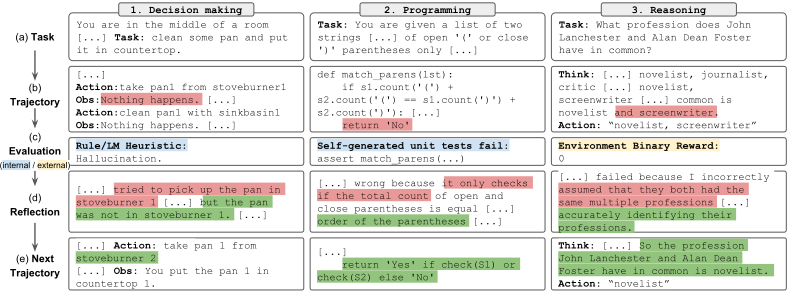
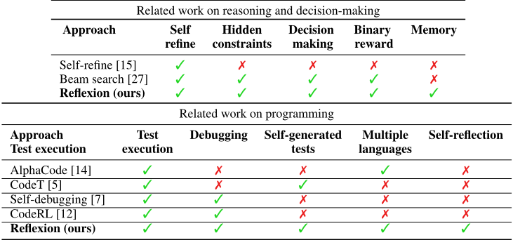
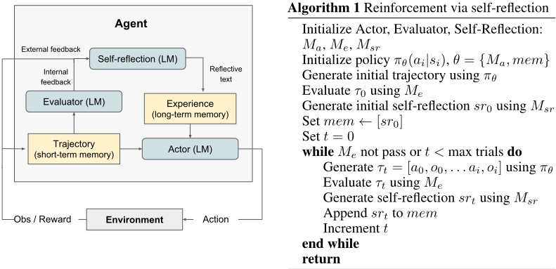
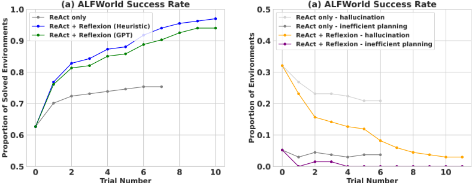
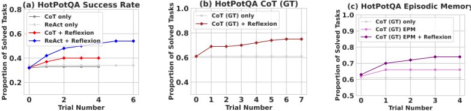
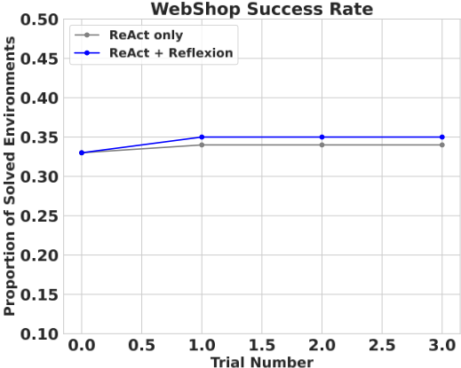

Reflexion：基于语言化强化学习的 Language Agent
论文针对 LLM Agent 难以从试错中快速学习的问题——传统 RL 需要大量训练样本与昂贵的模型微调——提出 Reflexion 框架：不更新权重，而是让 Agent 用语言反思任务失败信号，把反思文本存入 episodic memory buffer，作为后续尝试的额外上下文。架构由 Actor（基于 CoT 或 ReAct 生成动作）、Evaluator（精确匹配、预定义启发式、LLM 自评或自生成单元测试打分）与 Self-Reflection 模型组成；短期记忆为轨迹历史，长期记忆为反思文本并限制在 1-3 条以适配上下文窗口。实验显示 HumanEval Python pass@1 达 91%（超过 GPT-4 的 80%），AlfWorld 较 ReAct 绝对提升 22%，HotPotQA 提升 20%；消融证明去掉自反思或单元测试生成都会显著降低效果。对团队而言，这是 Agent 记忆系统与反思式 Agent loop 的代表性工作，可直接借鉴到代码生成与知识库问答 Agent 的重试与自评机制中。
LLM Agent 在与外部环境（游戏、编译器、API）交互时难以快速高效地从试错中学习：传统强化学习需要大量训练样本和昂贵的模型微调，已有方法只能依赖 in-context examples 教学。论文希望在不更新模型权重的前提下，让 Agent 从失败中形成可复用的改进经验，并解决反馈的 credit assignment 问题。
提出 Reflexion 框架，用'语言强化'替代权重更新：把环境的二值/标量反馈放大为文本形式的经验总结，作为下一轮试验的额外上下文。包含三个模型：Actor（基于 CoT 或 ReAct 的 LLM，生成文本与动作，附带 memory 组件）、Evaluator（精确匹配评分、预定义启发式、LLM 自评或自生成单元测试执行）、Self-Reflection 模型（根据轨迹、奖励与持久记忆生成具体、可执行的改进反思）。记忆分短期（轨迹历史）与长期（反思文本，实践中限制为 1-3 条以适配 max context），迭代'试验-评估-反思-重试'直至 Evaluator 判定正确。编程任务用 CoT 生成并经 AST 过滤的自生成单元测试套件做有依据的自评。
HumanEval Python pass@1 达 91%，超过此前 SOTA GPT-4 的 80%；较基线提升最多 11%
AlfWorld：ReAct + Reflexion 完成 134 个任务中的 130 个，较 ReAct 基线绝对提升 22%（12 次迭代学习步内）；ReAct-only 在第 6-7 次试验后性能停滞，幻觉率收敛在 22%
HotPotQA：较所有基线提升 20%；CoT (GT) + Reflexion 在无 ground truth 答案的情况下将准确率提升 14%
消融：自反思比仅用 episodic memory（EPM）带来 8% 的绝对学习增益
HumanEval Rust 最难 50 题消融：去掉单元测试生成后准确率降至 52%（基线 60%）；去掉自反思步骤则无法超过基线
MBPP Python 自生成测试的 false positive 率为 16.3%，而 HumanEval Python 仅 1.4%，解释了 Reflexion 在 MBPP Python 上不及 GPT-4 基线的原因
WebShop 上 ReAct + Reflexion 未能显著超过 ReAct，4 次试验后因无改进迹象而终止
与需要微调的传统 RL 不同，Reflexion 用语言反馈作为'语义梯度'信号且不更新权重；与 Self-Refine 等仅限单次生成的自改进方法不同，它通过持久化的 episodic memory 跨多次试验积累反思经验，形成'self-hints'；在编程任务上用自生成单元测试做有依据的自评，使结果符合 pass@1 口径（不依赖隐藏测试用例），区别于 AlphaCode、CodeT、Self-Debugging、CodeRL 等依赖 ground truth 测试或缺少自学习步骤的工作。
相关度级别：high
命中能力域：3.1 上下文工程与记忆 | 3.3 Agent 架构与工具使用 | 3.5 评测与可靠使用
理由：直接命中团队多个核心能力域：3.1（Agent 记忆系统的短期/长期双层设计、经验条数上限控制以适配上下文窗口，作者还明确指出未来可扩展为向量数据库）；3.3（反思式 Agent loop、以编译器/解释器为工具的执行可靠性、检测幻觉与低效规划的启发式）；3.5（多元自评估信号设计——LLM 分类、启发式、单元测试，pass@1 评测口径，以及代码生成 Agent 的失败模式实证分析如 false positive 率）。Actor-Evaluator-Self-Reflection 是单 Agent 内部组件分工，不涉及多 Agent 协作（3.4），但其反思与记忆模式是团队构建代码生成/审查、知识库问答 Agent 的基础参考。
建议动作：深入精读并做内部分享
arXiv:2303.11366v4 [cs.AI] 2023年10月10日
东北大学 noahshinn024@gmail.com
东北大学 berman.ed@northeastern.edu
普林斯顿大学 karthikn@princeton.edu
东北大学 cassano.f@northeastern.edu
麻省理工学院 agopi@mit.edu
Shunyu Yao
普林斯顿大学 shunyuy@princeton.edu
大型语言模型（LLM）正日益被用作目标驱动的 agent 与外部环境（例如游戏、编译器、API）进行交互。然而，这些语言 agent 要快速且高效地从试错中学习仍然颇具挑战性，因为传统的强化学习方法需要大量的训练样本和代价高昂的模型微调。我们提出了 Reflexion，一种新颖的框架，它不通过更新权重、而是通过语言反馈来强化语言 agent。具体而言，Reflexion agent 会以语言形式对任务反馈信号进行反思，然后将自身的反思文本保存在情景记忆缓冲区中，从而在后续尝试中促成更好的决策。Reflexion 具有足够的灵活性，可以整合各种类型（标量值或自由格式语言）和各种来源（外部或内部模拟）的反馈信号，并在多种任务（序列决策、编程、语言推理）上相比基线 agent 取得了显著提升。例如，Reflexion 在 HumanEval 编程基准测试（benchmark）上达到了 91% 的 pass@1 准确率，超越了此前最先进的 GPT-4（其准确率为 80%）。我们还使用不同的反馈信号、反馈整合方法和 agent 类型开展了消融与分析研究，并就它们如何影响性能提供了见解。我们在 https://github.com/noahshinn024/reflexion 上发布了全部代码、演示和数据集。
ReAct [30]、SayCan [1]、Toolformer [22]、HuggingGPT [23]、generative agents [19] 以及 WebGPT [17] 等近期工作已经证明了以大语言模型（LLM）为核心构建自主决策智能体（agent）的可行性。这些方法利用 LLM 生成文本和“动作”（actions），这些文本和动作可用于 API 调用并在环境中执行。由于这类方法依赖于参数量极其庞大的模型，迄今为止它们一直局限于使用上下文示例（in-context examples）作为训练 agent 的方式，因为诸如基于梯度下降的强化学习等更传统的优化方案需要大量的计算资源和时间。
本文提出了一种名为 Reflexion 的替代方法，该方法利用语言强化（verbal reinforcement）帮助 agent 从先前的失败中学习。Reflexion 将来自环境的二值或标量反馈转换为文本摘要形式的语言反馈，随后在下一个回合（episode）中将其作为额外上下文添加给 LLM agent。这种自我反思式反馈通过为 agent 提供具体的改进方向，起到了“语义”梯度信号的作用，帮助它从先前的错误中学习，从而在任务上取得更好的表现。这类似于人类以少样本（few-shot）方式迭代学习完成复杂任务的过程——通过反思自己先前的失败，为下一次尝试制定更佳的行动方案。例如，在图 1 中，一个 Reflexion agent 通过试错和自我反思，学会优化自身行为，以解决决策、编程和推理任务。
生成有用的反思反馈颇具挑战性，因为这既需要充分理解模型在何处犯了错（即信用分配问题（credit assignment problem）[25]），又需要具备生成包含可操作改进见解的摘要的能力。我们探索了三种实现方式——简单的二值环境反馈、针对常见失败情形的预定义启发式规则，以及自我评估，例如使用 LLM 进行二分类（决策任务）或自行编写单元测试（编程任务）。在所有实现中，评估信号都会被放大为可存储在长期记忆中的自然语言经验摘要。
与策略学习或基于价值的学习等更传统的强化学习（RL）方法相比，Reflexion 具有若干优势：1）它轻量级，无需对大语言模型（LLM）进行微调；2）与难以进行准确信用分配（credit assignment）的标量或向量奖励相比，它允许更细致的反馈形式（例如对动作的定向修改）；3）它允许以更明确、更可解释的形式对先前经验形成情景记忆（episodic memory）；4）它为未来回合（episode）中的动作提供更明确的提示。与此同时，它确实存在一些缺点：其效果依赖于 LLM 自我评估能力（或启发式方法）的强弱，且无法为成功提供形式化保证。不过，随着 LLM 能力的不断提升，我们预计这一范式只会随时间推移变得越来越好。
我们在以下三类任务上开展了实验：（1）决策任务，用于测试长轨迹上的序列动作选择；（2）推理任务，用于测试知识密集型的单步生成改进；（3）编程任务，用于教会 agent 有效使用编译器和解释器等外部工具。在这三类任务上，我们都观察到 Reflexion agent 是更出色的决策者、推理者和程序员。更具体而言，Reflexion agent 在决策类 AlfWorld [24] 任务上，经过 12 步迭代学习，相比强大的基线方法取得了 22% 的绝对提升；在 HotPotQA [28] 推理问题上提升了 20%；在 HumanEval [6] Python 编程任务上提升幅度高达 11%。
总而言之，我们的贡献如下：
推理与决策 Self-Refine [15] 采用了一种用于自我精炼的迭代框架，通过自我评估自主地改进生成结果。这些自我评估和自我改进步骤以给定的任务约束为条件，例如“如何以更积极的方式来撰写这段生成内容”。Self-Refine 是有效的，但仅限于单次生成的推理任务。Pryzant 等人 [21] 进行了类似的语义提示撰写优化，但同样仅限于单次生成任务。Paul 等人 [20] 对评论家模型（critic models）进行微调，以在轨迹内提供中间反馈，从而改进推理响应。Xie 等人 [27] 在动作上使用随机束搜索来执行更高效的决策搜索策略，由于其自我评估组件，该策略使 Agent 能够利用前瞻优势。Yoran 等人 [31] 和 Nair 等人

| Related work on reasoning and decision-making.Approach | Related work on reasoning and decision-making.Self refine | Related work on reasoning and decision-making.Hidden constraints | Related work on reasoning and decision-making.Decision making | Related work on reasoning and decision-making.Binary reward | Related work on reasoning and decision-making.Memory |
|---|---|---|---|---|---|
| Self-refine [15] | ✓ | ✗ | ✗ | ✗ | ✗ |
| Beam search [27] | ✓ | ✓ | ✓ | ✓ | ✗ |
| Reflexion (ours) | ✓ | ✓ | ✓ | ✓ | ✓ |
| Related work on reasoning and decision-making.Approach | Related work on reasoning and decision-making.Self refine | Related work on reasoning and decision-making.Hidden constraints | Related work on reasoning and decision-making.Decision making | Related work on reasoning and decision-making.Binary reward | Related work on reasoning and decision-making.Memory |
| Approach Test execution | Test execution | Debugging | Self-generated tests | Multiple languages | Self-reflection |
|---|---|---|---|---|---|
| AlphaCode [14] | ✓ | ✗ | ✗ | ✓ | ✗ |
| CodeT [5] | ✓ | ✗ | ✓ | ✗ | ✗ |
| Self-debugging [7] | ✓ | ✓ | ✗ | ✗ | ✗ |
| CodeRL [12] | ✓ | ✓ | ✗ | ✗ | ✗ |
| Reflexion (ours) | ✓ | ✓ | ✓ | ✓ | ✓ |
| Approach Test execution | Test execution | Debugging | Self-generated tests | Multiple languages | Self-reflection |

[16] 使用决策者模型对多个生成结果进行推理。Kim 等人 [10] 在固定数量的步骤上使用重试模式，但没有评估步骤。Goodman [9] 执行定性评估步骤，针对上一次生成结果提出优化建议。在本文中，我们展示了其中若干概念可以通过自我反思加以增强，以构建对自我反思经验的持久记忆，使 Agent 能够识别自身的错误，并随时间推移自我提出应从错误中吸取的教训。
编程 过去和近期的若干工作采用了测试驱动开发或代码调试实践的各种变体。AlphaCode [14] 在隐藏测试用例上评估一组生成结果。CodeT [5] 使用自生成的单元测试来为生成的函数实现打分。Self-Debugging [7] 采用一个调试组件，在获得来自代码执行环境的反馈后改进现有实现。CodeRL [12] 将该问题置于强化学习（RL）框架中，采用 actor-critic 设置，在获得来自执行环境的反馈后调试程序。AlphaCode、Self-Debugging 和 CodeRL 在修复较不复杂的程序缺陷方面是有效的，但它们依赖于真实测试用例（ground truth test cases），从而丧失了 pass@1 的资格，并且没有使用自我反思来弥合错误识别与实现改进之间的差距。CodeT 不访问隐藏测试用例，但也没有实现用于改进代码编写的自学习步骤。
我们为 Reflexion 开发了一种模块化的表述形式，利用三个不同的模型：一个 Actor（记为 M a），负责生成文本和动作；一个 Evaluator 模型（表示为 M e），负责对 M a 产生的输出进行评分；以及一个 Self-Reflection 模型（记为 M sr），负责生成语言强化线索，以协助 Actor 进行自我改进。我们将对上述每个模型进行详细描述，随后阐明它们在 Reflexion 框架内如何协同运作。

Actor：Actor 建立在大语言模型（LLM）之上，通过专门的提示使其根据状态观测生成所需的文本和动作。与传统的基于策略的强化学习（RL）设置类似，我们在时刻 t 从当前策略 π θ 中采样一个动作或生成结果 a t，并从环境接收观测 o t。我们探索了多种 Actor 模型，包括思维链（Chain of Thought, CoT）[26] 和 ReAct [30]。这些多样化的生成模型使我们能够在 Reflexion 框架内探索文本与动作生成的不同方面，从而为其性能和有效性提供有价值的见解。此外，我们还添加了一个记忆组件 mem，为该智能体提供额外的上下文。这一调整借鉴了 Brooks 等人 [3] 的思路，他们提出了一种使用上下文学习（in-context learning）的策略迭代方法。关于该记忆组件如何填充的细节将在下文提供。
Evaluator：Reflexion 框架中的 Evaluator 组件在评估 Actor 所生成输出的质量方面发挥着至关重要的作用。它以一条生成的轨迹作为输入，并计算一个奖励分数，该分数反映其在给定任务上下文中的表现。由于定义适用于语义空间的有效价值函数和奖励函数十分困难，因此我们研究了 Evaluator 模型的若干变体。对于推理任务，我们探索了基于精确匹配（exact match, EM）评分的奖励函数，以确保生成的输出与期望解紧密吻合。在决策任务中，我们采用针对特定评估标准量身定制的预定义启发式函数。此外，我们还尝试使用 LLM 本身的另一个实例作为 Evaluator，为决策任务和编程任务生成奖励。这种多层面的 Evaluator 设计方法使我们能够考察对生成输出进行评分的不同策略，从而洞察这些策略在一系列任务中的有效性与适用性。
我们在决策、推理和代码生成任务上评估了多种自然语言强化学习（RL）设置。具体而言，我们挑战一个 Agent 去完成以下任务：在 HotPotQA [28] 上进行基于搜索的问答；在 AlfWorld [24] 的常见家庭环境中完成多步任务；以及在带有解释器和编译器的类竞赛环境中完成代码编写任务，所用基准测试（benchmark）包括 HumanEval [6]、MBPP [2] 和一个新的 benchmark LeetcodeHard。最值得注意的是，Reflexion 在 AlfWorld 中相比强基线将性能提升了 22%，在 HotPotQA 中提升了 20%，在 HumanEval 上提升了 11%。
AlfWorld 是一套基于文本的环境套件，挑战 agent 在各种基于 TextWorld [8] 的交互式环境中解决多步任务。遵循 Yao 等人 [30] 的做法，我们在涵盖六种不同任务的 134 个 AlfWorld 环境中运行 agent，这些任务包括寻找隐藏物品（例如，在抽屉里找到锅铲）、移动物品（例如，把刀移到砧板上），以及利用其他物品对物品进行操作（例如，把番茄放进冰箱冷藏）。我们使用 ReAct [30] 作为动作生成器，因为 Yao 等人 [30] 已证明利用显式的中间思考可以在长轨迹决策中取得成功。AlfWorld 任务天然需要一个自我评估步骤，因为环境只能指示任务是否完成。为了实现完全自主的行为，我们实现了两种自我评估技术：使用大语言模型（LLM）进行自然语言分类，以及一个手工编写的启发式规则。该启发式规则很简单：如果 agent 执行相同的动作并收到相同的响应超过 3 个循环，或者当前环境中执行的动作数量超过 30（低效规划），我们就进行自我反思。在基线运行中，如果触发了自我反思，我们会跳过自我反思过程，重置环境，并开始一次新的尝试。在 Reflexion 运行中，agent 利用自我反思找出自己的错误，更新其记忆，重置环境，并开始一次新的尝试。为避免提示窗口过长而可能超出最大限制，我们将 agent 的记忆截断为最近 3 次自我反思（经验）。
为避免语法错误，我们向 agent 提供了两条特定领域的少样本（few-shot）轨迹。我们使用与 Yao 等人 [30] 相同的少样本轨迹示例，并使用 GPT-3 作为 LLM。AlfWorld 任务、ReAct 少样本提示以及 Reflexion 示例均包含在附录中。
结果 ReAct + Reflexion 显著优于 ReAct，利用简单的启发式规则来检测幻觉和低效规划，完成了 134 个任务中的 130 个。此外，ReAct + Reflexion 通过在连续 12 次尝试中的学习，学会了解决更多的任务。在仅使用 ReAct 的方法中，我们看到性能提升在第 6 次与第 7 次尝试之间陷入停滞。
分析 在基线方法于 AlfWorld 中失败的轨迹里，一个常见错误是 Agent 认为自己拥有某件物品，但实际上并没有该物品。Agent 随后会在一条长轨迹中接连执行多个动作，却无法回溯其动作以找出错误所在。Reflexion Trial Number Trial Number 通过利用自我反思将冗长且失败的轨迹提炼为相关经验，从而几乎消除了所有这类情况，这些经验日后可用作“自我提示”（self-hints）。在 AlfWorld 中，长期记忆主要在两种情况下对 Agent 有所帮助：1) 长轨迹中较早出现的错误可以被轻松识别，Agent 可以提出新的动作选择，甚至提出新的长期计划；2) 寻找某件物品时需要检查的表面/容器太多，Agent 可以利用多次试验积累的经验记忆来彻底搜索一个房间。在图 3 中，学习曲线表明学习过程是在多次经验中逐步发生的，这意味着 Agent 成功地平衡了情况 1 和情况 2，具体表现为前两次试验之间改进的即时跃升，以及随后 11 次试验中的稳步提升，最终达到接近完美的性能。另一方面，图 3 显示仅使用 ReAct 的 Agent 收敛于 22% 的幻觉率，且没有长期恢复的迹象。

HotPotQA [28] 是一个基于 Wikipedia 的数据集，包含 113k 个问答对，要求 Agent 解析内容并在多个支持文档上进行推理。为了测试仅推理能力的提升，我们实现了 Reflexion + 思维链（Chain-of-Thought, CoT）[26]，分别用于逐步的 Q → A 和 Q, C_gt → A 两种实现，其中 Q 是问题，C_gt 是来自数据集的真实（ground truth）上下文，A 是最终答案。由于 CoT 并不是一种多步决策技术，我们向 Agent 提供 C_gt，以便在所提供文本的大段内容上隔离出推理行为。为了测试需要推理与动作选择的整体问答能力，我们实现了一个 Reflexion + ReAct [30] Agent，它能够使用 Wikipedia API 检索相关上下文，并通过逐步的显式思考来推断答案。对于 CoT 实现，我们使用 6-shot 提示；对于 ReAct，我们使用 2-shot 提示；对于自我反思，我们使用 2-shot 提示。所有示例均可在附录中找到。
稳健地评估自然语言答案是自然语言处理（NLP）领域的一个长期难题。因此，在试验之间，我们利用环境进行精确匹配（exact match）答案评分，向 Agent 给出二值成功信号。每次试验结束后，采用自我反思循环来放大该二值信号，类似于 4.1 节中 AlfWorld 的决策设置，记忆大小为 3 条经验。
结果 Reflexion 在多个学习步骤中以显著优势超越所有基线方法。此外，仅 ReAct、仅 CoT 和仅 CoT (GT) 的实现都无法以概率方式在任何任务上取得改进，这意味着任何基线方法在第一次试验中失败的任务，在温度为 0.7 的后续试验中都无法被解决。在 Reflexion 运行中，我们允许 Agent 积累经验并对失败的任务进行重试，直到它在特定任务上连续产生 3 次失败尝试。自然地，CoT (GT) 由于可以访问问题的真实上下文而取得了更高的准确率得分。尽管如此，CoT (GT) Agent 仍无法为 39% 的问题正确推断出正确答案，而 Reflexion 帮助 Agent 在无法访问真实答案的情况下纠正其错误，从而将其准确率提升了 14%。

分析 我们进行了一项消融实验，以 CoT (GT) 作为基线方法（图 4），以分离自我反思步骤在推理中的优势。回顾一下，CoT (GT) 使用思维链（Chain-of-Thought, CoT）推理并结合所提供的真实上下文（ground truth context），用于测试长上下文上的推理能力。随后，我们通过纳入最近的一条轨迹，加入了情景记忆（episodic memory, EPM）元素。对于 Reflexion Agent，我们将标准的自我反思步骤实现为最后一遍处理。直观地说，我们检验该 Agent 是否能够通过使用以第一人称撰写的语言化解释来更有效地进行迭代学习。图 4 表明，自我反思在情景记忆带来的学习优势之上，额外带来了 8% 的绝对提升，从而改善了学习效果。这一结果支持了如下论点：仅精炼的方法不如由自我反思引导的精炼方法有效。
我们在 MBPP [2]、HumanEval [6] 以及我们的新数据集 LeetcodeHardGym 上，对基线方法与 Reflexion 方法在 Python 和 Rust 代码编写任务上进行了评估。MBPP 和 HumanEval 衡量在给定自然语言描述条件下函数体生成的准确率。我们使用基准测试（benchmark）语言编译器 MultiPL-E [4] 将 HumanEval 和 MBPP 的子集翻译为 Rust 语言。MultiPL-E 是一组小型编译器的集合，可用于将 Python benchmark 题目翻译为其他 18 种语言。我们纳入 Rust 代码生成实验，以证明用于代码生成的 Reflexion 实现与具体语言无关，既可用于解释型语言，也可用于编译型语言。最后，我们引入了一个新的 benchmark——LeetcodeHardGym，它是一个交互式编程训练环境（gym），包含 40 道 Leetcode 困难级别的题目，这些题目均发布于 2022 年 10 月 8 日之后，而该日期正是 GPT-4 [18] 的预训练数据截止日期。
编程任务为采用更具实际依据的自我评估实践（例如自生成的单元测试套件）提供了独特的机会。因此，我们基于 Reflexion 的编程任务实现符合报告 pass@1 准确率的条件。为了生成测试套件，我们使用思维链（Chain-of-Thought, CoT）提示 [26] 来生成多样化、覆盖面广且带有相应自然语言描述的测试。随后，我们通过尝试为每个候选测试构建有效的抽象语法树（abstract syntax tree, AST）来筛选出语法有效的测试语句。最后，我们从生成的单元测试集合中采样 n 个测试，构成测试套件 T，记为 { t 0 , t 1 , . . . , t n }。我们将 n 设为最多 6 个单元测试。除单元测试套件这一组成部分之外，Reflexion 编程 Agent 的学习循环设置与推理和决策 Agent 完全相同，最大记忆限制为 1 条经验。
| Benchmark + Language | Prev SOTA Pass@1 | SOTA Pass@1 | Reflexion Pass@1 |
|---|---|---|---|
| HumanEval (PY) HumanEval (RS) MBPP (PY) MBPP (RS) Leetcode Hard | 65.8 (CodeT [5] + GPT-3.5) - 67.7 (CodeT [5] + Codex - | 80.1 (GPT-4) 60.0 (GPT-4) 80.1 (GPT-4) 70.9 (GPT-4) 7.5 (GPT-4) | 91.0 68.0 77.1 75.4 15.0 |
| [6]) | |||
| (PY) | - |
| Benchmark + Language | Prev SOTA Pass@1 | SOTA Pass@1 | Reflexion Pass@1 |
| Benchmark + Language | Base | Reflexion | TP | FN | FP | TN |
|---|---|---|---|---|---|---|
| HumanEval (PY) | 0.8 | 0.91 | 0.99 | 0.4 | 0.01 | 0.6 |
| MBPP (PY) | 0.8 | 0.77 | 0.84 | 0.59 | 0.16 | 0.41 |
| HumanEval (RS) | 0.6 | 0.68 | 0.87 | 0.37 | 0.13 | 0.63 |
| MBPP (RS) | 0.71 | 0.75 | 0.84 | 0.51 | 0.16 | 0.49 |
| Benchmark + Language | Base | Reflexion | TP | FN | FP | TN |
结果 Reflexion 的准确率超越了所有基线，并在除 MBPP Python 1 之外的所有 Python 和 Rust benchmark 上树立了新的最先进标准。我们进一步研究了 Reflexion 在 MBPP Python 上表现欠佳的问题。
分析 我们承认，具有自我反思能力的代码生成 Agent 的表现受制于其编写多样化、全面测试的能力。因此，当模型生成一个不稳定的（flaky）测试套件时，有可能所有测试在一个错误的解上全部通过，从而给代码补全打上假阳性标签 [11]。另一方面，如果模型生成的测试套件编写有误，则某些测试有可能在一个正确的解上失败，从而使生成的自我反思以一个假阴性的代码补全为条件。就 Reflexion 的实现而言，假阴性优于假阳性，因为 Agent 或许能够利用自我反思来识别出错误的测试，并提示自己保持原始代码补全不变。另一方面，如果一个无效的测试套件返回了假阳性的补全（所有内部测试用例都通过，但实现是错误的），Agent 将过早地报告一个无效的提交。在 2 中，我们测量了各种条件，以分析 pass@1 准确率之外的性能。此前，我们展示了 Reflexion 在 MBPP Python 上性能逊于基线 GPT-4。在 2 中，我们观察到由内部测试执行产生的假阳性标签之间存在显著差异，即 P(not pass@1 generation correct | tests pass)，也就是说，即一个提交在通过所有单元测试的情况下将会失败的概率。对于 HumanEval 和 MBPP Python，基线 pass@1 准确率相对接近，分别为 82% 和 80%。然而，MBPP Python 的假阳性测试执行率为 16.3%，而 HumanEval Python 的这一比率仅为 1.4%，从而使整体准确率达到 91% 1。
| Approach | Test Generation | Self-reflection | Pass@1 (Acc) |
|---|---|---|---|
| Base model | False | False | 0.6 |
| Test generation omission | False | True | 0.52 |
| Self-reflection omission | True | False | 0.6 |
| Reflexion | True | True | 0.68 |
| Approach | Test Generation | Self-reflection | Pass@1 (Acc) |
消融研究 我们在 50 道最难的 HumanEval Rust 问题的一个子集上，测试了 Reflexion 在测试生成与自我反思协作方面的组合方法。我们的 Rust 编译器环境提供了详细的错误日志和有用的调试提示，因此为受损的方法提供了一个良好的试验场。首先，我们省略了内部测试生成与执行步骤，以检验 Agent 在缺乏当前实现指导的情况下进行自我反思的能力。3 显示出 52% 对 60%（基线）的较低准确率，这表明在没有单元测试的情况下，Agent 无法判断当前实现是否正确。因此，Agent 必须参与运行的所有迭代，而无法选择提前返回，从而对实现做出有害的修改。
接下来，我们通过省略单元测试套件评估失败后紧跟的自然语言解释步骤，来检验自我反思的贡献。直观地说，这给该 Agent 带来了挑战：需要在所有失败的单元测试上同时完成错误识别与实现改进两项任务。有趣的是，这一受损的 Agent 的性能并未超过基线运行。我们观察到，测试生成和代码编译步骤能够捕获语法和逻辑错误，但实现修复并未体现这些指示。这些实证结果表明，近期若干提出不包含自我反思的盲目试错调试技术的工作，在诸如用 Rust 编写复杂程序等更难的任务上是无效的。
从本质上讲，Reflexion 是一种利用自然语言进行策略优化的优化技术。策略优化是通过经验改进动作选择的一种强大方法，但它仍可能陷入非最优的局部极小值解。在本研究中，我们将长期记忆限制为具有最大容量的滑动窗口，但我们鼓励未来的工作采用更高级的结构（如向量嵌入数据库或传统 SQL 数据库）来扩展 Reflexion 的记忆组件。具体到代码生成，测试驱动开发在指定精确的输入-输出映射方面存在许多实际限制，例如非确定性生成器函数、与 API 交互的非纯函数、根据硬件规格而变化输出的函数，或调用可能难以预测的并行或并发行为的函数。
大语言模型（LLM）正被越来越多地用于与外部环境（例如互联网、软件、机器人技术等）以及人类进行交互。我们的工作有潜力强化并赋能这些 Agent，使其迈向更高的自动化程度和工作效率，但当这些 Agent 被滥用时，也会放大相应的风险。我们相信，这一研究方向在安全与伦理考量方面还需要投入更多的努力。
另一方面，强化学习（RL）一直受制于其黑箱策略与优化设置，在其中可解释性与对齐（alignment）问题始终颇具挑战。我们提出的“言语式”（verbal）强化学习或许能够解决其中的一部分问题，并使自主 Agent 更加可解释、可诊断。例如，在工具调用可能过于难以被人类理解的情形下，可以对自我反思（self-reflection）加以监控，以确保在使用工具之前意图是恰当的。
在本工作中，我们提出了 Reflexion，一种利用言语式强化（verbal reinforcement）来教会 Agent 从过去的错误中学习的方法。我们通过实验证明，Reflexion Agent 通过利用自我反思（self-reflection），能够显著优于当前广泛使用的决策方法。在未来的工作中，Reflexion 可用于采用那些在传统强化学习（RL）环境中已被深入研究的更先进技术，例如自然语言中的价值学习（value learning）或离策略（off-policy）探索技术。
我们强烈建议他人在运行自主代码编写实验时使用隔离的执行环境，因为生成的代码在执行前不会经过验证。
9
我们进一步研究了试错式问题求解方法在不同能力强度的模型上的适用性。我们发现，明确表述自我修正的能力是更强大、更大规模模型的一种涌现特质。
| Approach | Pass@1 accuracy (avg over 8 trials) | Pass@1 accuracy (std) |
|---|---|---|
| Baseline | 0.26 | 0.00481 |
| Reflexion | 0.26 | 0.00305 |
| Approach | Pass@1 accuracy (avg over 8 trials) | Pass@1 accuracy (std) |
| Model | Baseline accuracy | Reflexion accuracy |
|---|---|---|
| CoT (GT) + text-davinci-003 | 0.6 | 0.77 |
| CoT (GT) + gpt-3.5-turbo | 0.57 | 0.71 |
| CoT (GT) + gpt-4 | 0.68 | 0.8 |
| ReAct + text-davinci-003 | 0.3 | 0.55 |
| ReAct + gpt-3.5-turbo | 0.26 | 0.38 |
| ReAct + gpt-4 | 0.39 | 0.51 |
| Model | Baseline accuracy | Reflexion accuracy |
12
Environment: You are in the middle of a room. Looking quickly around you, you see a bed 1, a desk 2, a desk 1, a drawer 6, a drawer 5, a drawer 4, a drawer 3, a drawer 2, a drawer 1, a garbagecan 1, a laundryhamper 1, a safe 1, a shelf 6, a shelf 5, a shelf 4, a shelf 3, a shelf 2, and a shelf 1.
Task: examine the mug with the desklamp.
> 思考：首先我需要找到一个马克杯。马克杯更可能出现在抽屉（1-6）、书桌（1-2）、架子（1-6）、垃圾桶（1）、脏衣篮（1）中。我可以逐一检查，从抽屉 1 开始。
> 前往抽屉 1
抽屉 1 是关着的。
. . .
> 打开抽屉 6
你打开了抽屉 6。抽屉 6 是开着的。在里面，你看到一个钥匙链 2。
在书桌 1 上，你看到一张信用卡 3、一盏台灯 1、一台笔记本电脑 2、一个马克杯 1、一支钢笔 1 和一支铅笔 1。> 思考：现在我找到了马克杯（1）。接下来，我需要把它拿起来。
> 思考：现在我拿起了马克杯（1）。接下来，我需要找到一盏台灯。台灯更可能出现在书桌（1-2）、边桌（1-2）、架子（1-6）、床（1）、抽屉（1-6）中。我可以逐一检查，从书桌 1 开始。
> 前往书桌 2
在书桌 2 上，你看到一个闹钟 1、一个碗 1、一个马克杯 3、一支铅笔 3 和一支铅笔 2。
> 思考：现在我找到了台灯（1）。接下来，我需要使用它。
状态：失败
反思：在这个环境中，我的计划是先找到一个马克杯，然后找到并使用一盏台灯。然而，任务要求用台灯检查马克杯。我应该先寻找台灯，然后再寻找马克杯。我注意到台灯是在书桌 1 上找到的。在下一次试验中，我将前往书桌 1，找到台灯，然后寻找马克杯并用台灯检查它。
在书桌 1 上，你看到一张信用卡 3、一盏台灯 1、一台笔记本电脑 2、一个马克杯 1、一支钢笔 1 和一支铅笔 1。> 思考：为了完成这个任务，我需要找到并拿取一个马克杯，然后找到并使用一盏台灯。
你打开了台灯 1。
状态：成功
图 5：[上] 一条 AlfWorld 轨迹，其中 Agent 由于低效的规划而失败。在反思中，Agent 认识到它应该先寻找台灯再寻找马克杯，而不是先寻找马克杯再寻找台灯。[下] Agent 能够纠正其推理轨迹，并以简洁的方式执行一系列动作。
13
在第 5 节中，我们简要指出，Reflexion 难以克服那些需要极具创造性的行为才能摆脱的局部极小值选择。我们在 WebShop [29] 上的一项实验中观察到了这一缺陷。WebShop 是一个基于网页的问题解决基准测试（benchmark），用于测试智能体在电子商务网站上进行导航，以根据客户的请求定位并购买商品。我们在 100 个环境中测试了一个 two-shot ReAct + Reflexion 智能体。然而，在仅进行了四次试验后，我们便终止了运行，因为智能体没有表现出改进的迹象 6。此外，智能体在失败的尝试之后也未能生成有帮助的、直观的自我反思。我们得出结论：Reflexion 无法解决需要大量多样性和探索的任务。在 AlfWorld 中，智能体能够充分地探索新环境，因为允许执行的动作可以直接在观察中看到。在 HotPotQA 中，智能体面临与 WebShop 类似的搜索查询任务，但更为成功，因为维基百科文章的搜索空间更加多样，对搜索查询精确度的要求也较低。电子商务搜索引擎的一个常见问题是如何妥善处理自然语言搜索解读中的歧义。因此，WebShop 提出了一项需要 Reflexion 智能体表现出非常多样且独特行为的任务。

由于大语言模型（LLM）经过了大量的对话训练，编程类的 LLM 调用需要严格的指令才能使其仅生成函数体。下面给出了几个编程示例，其中指令以蓝色高亮显示，并附有模板。完整实现请参见 https://github.com/noahshinn024/reflexion。
函数签名示例：
1 def minSubArraySum(nums): 2 """ 3 Given an array of integers nums , find the minimum sum of any 4 non-empty sub-array of nums. 5 Example 6 minSubArraySum([2, 3, 4, 1, 2, 4]) == 1
14
7 minSubArraySum([-1, -2, -3]) == -6 8 """
函数体实现示例：
1 min_sum = float('inf') 2 for i in range(len(nums)): 3 current_sum = 0 4 for j in range(i, len(nums)): 5 current_sum += nums[j] 6 if current_sum < min_sum: 7 min_sum = current_sum 8 return min_sum
你是一个 Python 编写助手。你将获得你之前对某个函数的实现、一系列单元测试结果，以及你对之前实现的自反思。请通过仅回复改进后的函数体来应用下述必要的修改。不要在回复中包含函数签名。你回复的第一行应有 4 个空格的缩进，以便在语法上与用户提供的函数签名相匹配。用户会向你提供几个示例。
Reflexion Actor 的生成遵循以下形式：（指令）（函数实现）（单元测试反馈）（自反思）（下一次函数实现的指令）
完整示例见 https://github.com/noahshinn024/reflexion
Reflexion 无自我反思（Self-Reflection）消融的 Actor 生成遵循以下形式：（指令）（函数实现）（单元测试反馈）（自我反思）（下一次函数实现的指令）
Reflexion 无测试生成消融的 Actor 生成遵循以下形式：（指令）
15
（函数实现）（单元测试反馈）（自我反思）（下一次函数实现的指令）
16
尝试 #1：问题：Grown-Ups 的主演演员在 "'Allo 'Allo!" 中最广为人知的角色是什么？
思考 1：我需要搜索 Grown-Ups 和 "'Allo 'Allo!"，找到主演 Grown-Ups 的演员，然后找出他在 "'Allo 'Allo!" 中最广为人知的角色。
观察 1：Grown-Ups 是一部 1980 年的英国 BBC 电视电影，由 Mike Leigh 构思并执导。主演包括 Lesley Manville、Philip Davis、Brenda Blethyn、Janine Duvitski、Lindsay Duncan 和 Sam Kelly。该片由 Robin Sales 剪辑，Louis Marks 为 BBC 制作，最初于 1980 年 11 月 28 日在 BBC 2 播出。
思考 2：Grown-Ups 由 Lesley Manville、Philip Davis、Brenda Blethyn、Janine Duvitski、Lindsay Duncan 和 Sam Kelly 主演。我需要搜索 "'Allo 'Allo!"，找出哪位演员以哪个角色最为知名。
第 1 次尝试（Trial #1）：问题：John Lanchester 和 Alan Dean Foster 共同拥有的职业是什么？
思考 1：让我们一步一步思考。John Lanchester 是一位小说家、记者和评论家。Alan Dean Foster 是一位小说家和编剧。因此，John Lanchester 和 Alan Dean Foster 共同拥有的职业是小说家和编剧。
第 2 次尝试（Trial #2）：问题：John Lanchester 和 Alan Dean Foster 共同拥有的职业是什么？
思考 1：让我们一步一步思考。John Lanchester 是一位小说家、记者和财经记者。Alan Dean Foster 是一位小说家和编剧。因此，John Lanchester 和 Alan Dean Foster 共同拥有的职业是小说家。
反思：我关于 John Lanchester 和 Alan Dean Foster 共同职业的推理之所以失败，是因为我错误地假设他们两人拥有相同的职业。今后在尝试回答这个问题时，我应该更加注重深入研究两位作者各自的背景，以确保我能准确识别他们的职业。此外，我还应该考虑到他们可能拥有多个共同职业的可能性。
上下文：白原战役（Battle of White Plains）是美国独立战争（American Revolutionary War）中纽约与新泽西战役（New York and New Jersey campaign）里的一场战斗，于1776年10月28日在纽约州白原（White Plains）附近打响。在撤退之后……
尝试 #1：问题：在美国独立战争期间，为争夺纽约市和新泽西州的控制权而于1776年10月28日在纽约州白原附近进行的一系列战斗是什么？
思考 1：这个问题问的是美国独立战争期间为争夺纽约市和新泽西州控制权、于1776年10月28日在纽约州白原附近进行的一系列战斗。从上下文中，我知道这就是白原战役。
尝试 #2：问题：在美国独立战争期间，为争夺纽约市和新泽西州的控制权而于1776年10月28日在纽约州白原附近进行的一系列战斗是什么？思考 1：这个问题问的是美国独立战争期间为争夺纽约市和新泽西州控制权、于1776年10月28日在纽约州白原附近进行的一系列战斗。根据上下文，我知道这一系列战斗就是纽约与新泽西战役。
反思：在反思我所给出的错误答案时，我意识到我可能没有提供足够的上下文来准确回答这个问题。问题要求给出的是一系列战斗，但我只提供了一场战斗的名称。为了今后能更好地回答这个问题，我会确保提供更多的上下文，例如该战役的名称——即纽约与新泽西战役——以及它是一系列战斗这一事实。此外，我还会确保包含各场战斗的日期以及地点，以确保我的回答全面而准确。
18
尝试 #1：问题：Jonny Craig 和 Pete Doherty 中，谁曾是更多乐队的成员？
思考 1：让我们一步一步思考。Jonny Craig 曾是六支乐队的成员，其中包括 Emarosa、Dance Gavin Dance 和 Slaves。Pete Doherty 曾是七支乐队的成员，其中包括 The Libertines、Babyshambles 和 The Puta Madres。所以 Pete Doherty 曾是更多乐队的成员。
尝试 #2：问题：Jonny Craig 和 Pete Doherty 中，谁曾是更多乐队的成员？
思考 1：让我们一步一步思考。我将调查这两位音乐人过去和现在所属的乐队，以确保我能够准确地比较他们的乐队成员身份。经过调查，我发现 Jonny Craig 曾是七支乐队的成员，其中包括 Emarosa、Dance Gavin Dance 和 Slaves。Pete Doherty 曾是七支乐队的成员，其中包括 The Libertines、Babyshambles 和 The Puta Madres。所以 Jonny Craig 曾是更多乐队的成员。
反思：我针对哪位音乐人曾是更多乐队成员这一问题的推理失败了，因为我没有考虑到 Jonny Craig 过去曾是更多乐队的成员，尽管 Pete Doherty 目前是更多乐队的成员。今后在尝试回答这个问题时，我应该着重调查这两位音乐人过去和现在所属的乐队，以确保我能够准确地比较他们的乐队成员身份。
上下文：Hari Bahadur Basnet 是一位尼泊尔政治家。他是 Rastriya Janashakti 党对外关系部的负责人。Basnet 拥有工程学理学硕士（M.Sc.）学位。
理学硕士（Master of Science，拉丁语："Magister Scientiae"；缩写为 MS、M.S.、MSc、M.Sc.、MSci、M.Sci.、ScM、Sc.M.、SciM 或 Sci.M.）是科学领域的一种硕士学位……
尝试 #1：问题：Rastriya Janashakti 党对外关系部的负责人持有的学位可缩写为 MS、M.S. 或 ScM，该学位属于哪个领域？
思考 1：这个问题问的是 Rastriya Janashakti 党对外关系部负责人所持学位属于哪个学习领域。从上下文中，我知道该学位是理学硕士学位，这种学位通常授予科学、工程和医学领域的学习。
尝试 #2：问题：Rastriya Janashakti 党对外关系部的负责人持有的学位可缩写为 MS、M.S. 或 ScM，该学位属于哪个领域？
思考 1：这个问题问的是 Rastriya Janashakti 党对外关系部负责人所持学位属于哪个学习领域。从上下文中，我知道该学位是理学硕士学位，这种学位通常授予科学、工程和医学领域的学习。然而，问题问的是学习领域，而不是学位。根据上下文，我知道 Hari Bahadur Basnet 持有工程学理学硕士（M.Sc. in Engineering）学位。
反思：在第一次尝试中，我误解了问题。我以为问题问的是学位的类别，而不是具体的学位。我从错误中吸取了教训，在第二次尝试中，我更加仔细地关注问题，从而理解到它问的是一个具体的学习领域。
19